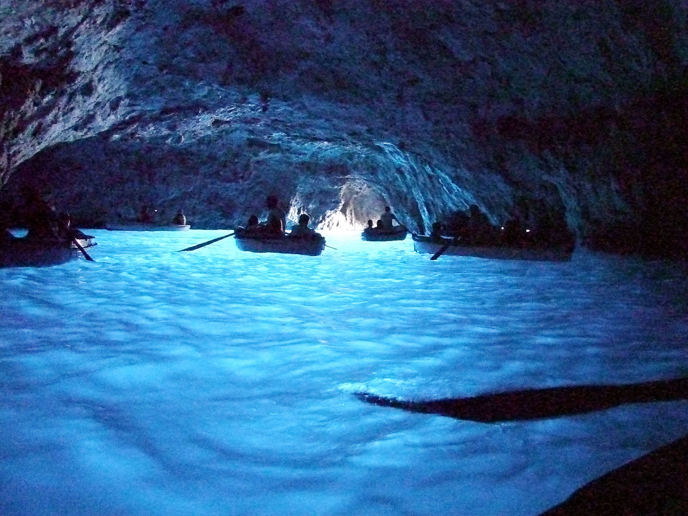
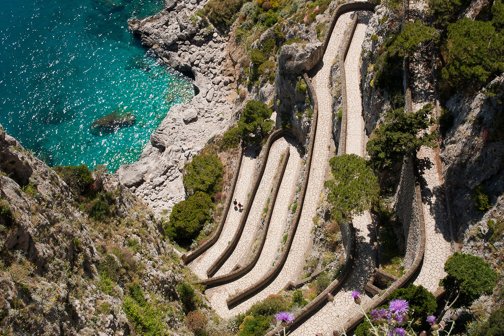
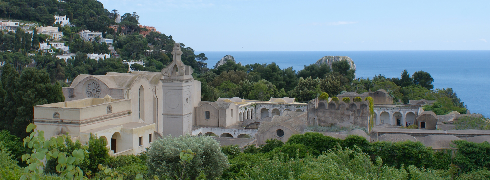
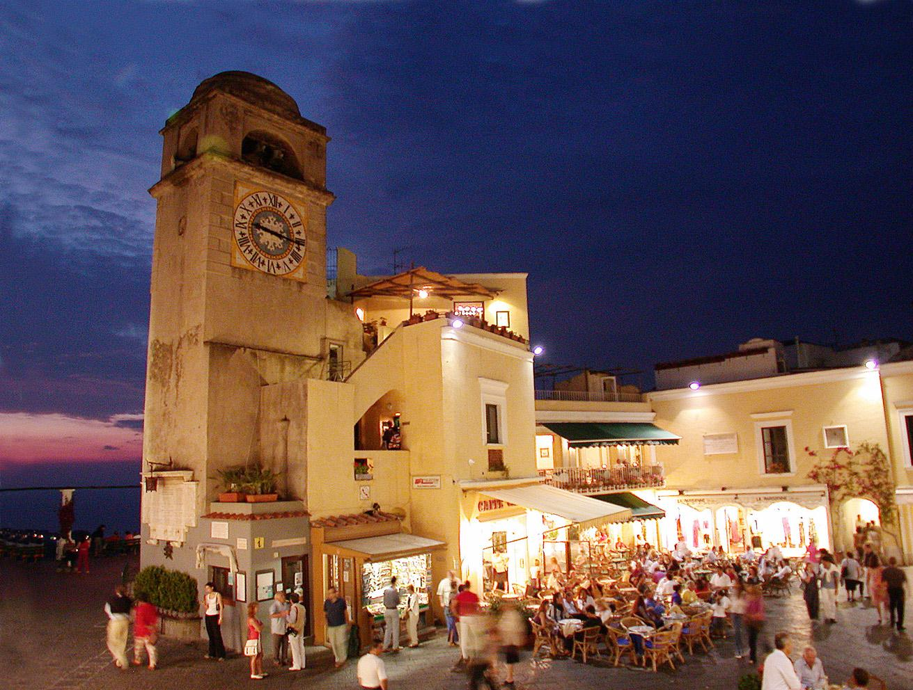

一生ものの体験を…
Grotta Azzurra
世界遺産としても有名な青の洞窟。天候、潮の条件が揃ったときのみしか行くことのできない特別な場所です。また、その幻想的な風景は一度見たら二度と忘れることのできない貴重な体験となるでしょう。
Augustus Gardens - Via Krupp
20世紀初め、海とホテルをつなぐために急な崖にあるエンジニアによってつくられた細道。何度もヘアピンカーブが続いていて道が重なっているようにも見えてしまう不思議な道です。
Charterhouse of St. Giacomo
1371年に建てられたカプリ島内最古の歴史的建造物です。建物内はは3つのブロックに分けられていてそれぞれ女性用、観光客用、隔離する用など様々な用途で使われていました。
Piazzetta
島の住人が"a chiazz"という名称で親しんでいる場所はカプリ島で一番有名な広場です。昔から島の中心部として栄え、今ではハリウッドスターなども訪れるようになりますますおしゃれな中心地として名を挙げています。
Mount Solaro

カプリ島で一番きれいなパノラマの風景が見られることで人気を集めているスポットです。島の最高位に位置し町を見渡すことも、海を見渡すことも可能です。島内一のおすすめ写真スポット。
Basic Information
- Country: Italy
- Location: Tyrrhenian Sea
- Average Highest Temperature: 22℃
- Population: 12,200
- Area: 10.4㎢
- Average Lowest Temperature: 12℃